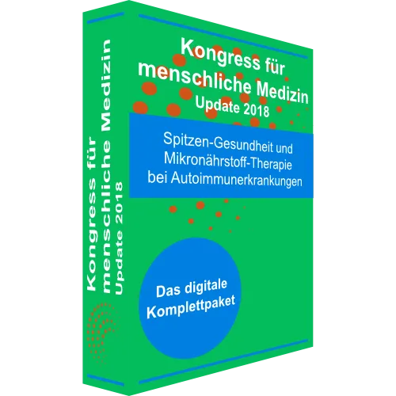
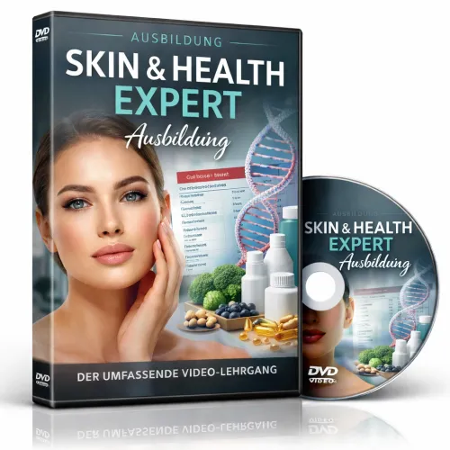
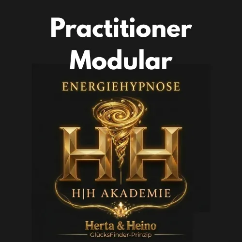
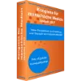
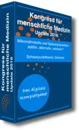
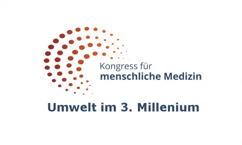
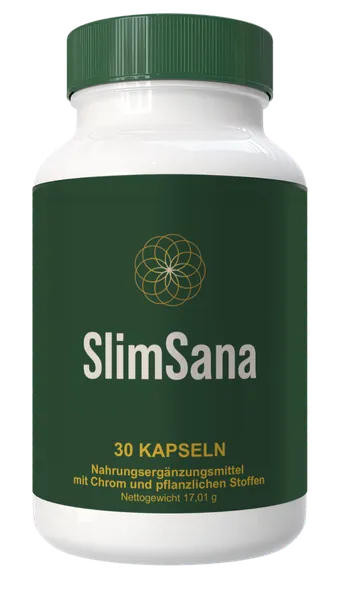
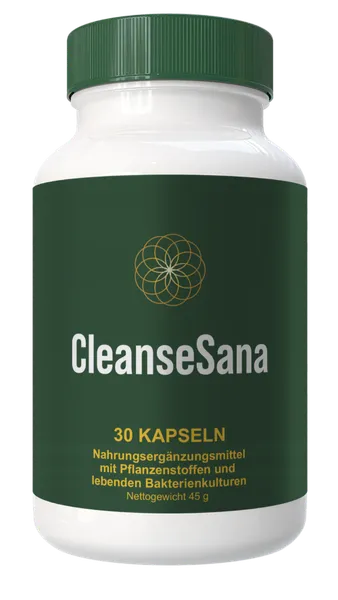
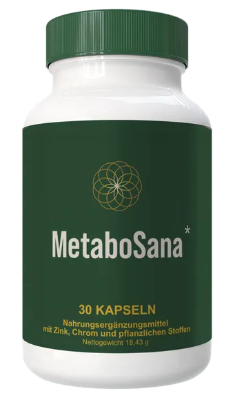

KMM2018 Autoimmunerkrankungen - Digitales Kongresspaket
Produktprofil · Marktplatz-Daten 2026-10-14 · Verkaufsseiten-Recherche 2026-10-14 · Kategorien: Health & Fitness
- KMM2018 Autoimmunerkrankungen - Digitales Kongresspaket ist ein/e Mitgliederbereich & Videokurs in Health & Fitness, vertrieben über den Digistore24-Marktplatz von Anbieter AMMSpitz, gelistet seit 2018-05-02.
- Listenpreis $136.29 (single payment, installment) — Checkout, Auslieferung und Rückerstattungen laufen über Digistore24 selbst, nicht über den Anbieter.
- Käuferschutz: keine standardisierte Garantie-Formulierung gefunden — Rückerstattungsbedingungen vor der Zahlung auf der offiziellen Seite prüfen.
Interesse an KMM2018 Autoimmunerkrankungen - Digitales Kongresspaket? Aktueller Preis, Boni und Garantiebedingungen finden Sie auf der offiziellen Seite des Anbieters:
Offizielle Verkaufsseite ansehen
Affiliate-Link (Werbung) — wir verdienen ggf. eine Provision, ohne Mehrkosten für Sie.

Marktplatz-Daten
| Produkttyp | Mitgliederbereich & Videokurs |
|---|---|
| Preis | $136.29 (Single payment, Installment) |
| Garantie/Rückgabe | Laut Verkaufsseite des Anbieters — vor dem Kauf auf der offiziellen Seite prüfen |
| Anbieter | AMMSpitz (gelistet seit 2018-05-02) |
Marktplatz-Beschreibung des Anbieters
Kongress für menschliche Medizin - Autoimmunerkrankungen Das Paket enthält die Aufzeichnung der Vorträge beider Kongresstage (14.04.2018 - 15.04.2018) als Video-Download in HD-Qualität (mp4) Die Vorträge Übersicht Autoimmunerkrankungen B. König, Magdeburg Vitamin D and Immune System M. Holick, Boston - USA (Vortrag in Englisch) Vitamin D Rezeptor Funktionen und Vitamin D-Sensitivität C. Carlberg, Kuopio - Finnland High doses vitamin D therapy – Protocol and results CG Coimbra, São Paulo - Brasilien (Vortrag in Englisch, Aufzeichnung vom 1. International Workshop on Vitamin D Sensitivity and High Dose Vitamin D Therapy ) Umsetzung des Coimbra-Protokolls für Patienten Ch. Kiening, Gräfelfing Autoimmunerkrankungen und die 2. Evolution des Menschen J. Spitz, Schlangenbad/ Wiesbaden Integrative Therapie bei Autoimmunerkrankungen J. Jonescu, Neukirchen Autoimmunerkrankungen der Haut U. Amon, Hohenstadt Therapeutische Alternativen bei Autoimmunerkrankungen B. Lemke, Heidelberg Labormethoden bei Autoimmunerkrankungen W. Bieger, München Mikronährstoffe bei Autoimmunerkrankungen U. Gröber, Essen Hashimoto Thyreoiditis als autoimmune Systemerkrankung L. Schomburg, Berlin Öko-Psychosomatik: Der Einfluss des Waldes auf unser Immunsystem Clemens G. Arvay, Wien - Österreich Stress und Autoimmunität A. Wolf, Ulm Körperliche Aktivität und Immunsystem P. Zimmer, Köln Autoimmunerkrankungen des Darmes/Stuhltransplantation M. Vehreschild, Köln Die Wirkung von Singen und Musik auf das Immunsystem E. Wünnenberg, Scheidegg Omega 3 Fettsäuren bei Autoimmunerkrankungen V. Schmiedel, Baar - Schweiz Synopsis und Perspektiven J. Spitz, Schlangenbad
Von der Verkaufsseite des Anbieters
Seitentitel: Kongress für menschliche Medizin 2018 - AMM - Digitale Welt
Meta-Beschreibung: Schwerpunktthema: Spitzen-Gesundheit und Mikronährstofftherapie für Autoimmunerkrankungen. Neue Erkenntnisse über die komplexe Struktur und Funktionsweise des Immunsystems, aber auch die neuesten Einsichten in die Genetik und der Epigenetik bieten neue therapeutische Ansätze mit bislang nicht gekannter Effizienz.
Hauptüberschrift
DIGITALES KONGRESSPAKET - AUTOIMMUNERKRANKUNGEN
Das Kongresspaket ist der schnellste Weg,
alles über Autoimmunerkrankungen zu erfahren.
Abschnitts-Überschriften
- Willkommen in der Akademie für menschliche Medizin
Einstiegstext
Sie sehen gerade einen Platzhalterinhalt von Standard . Um auf den eigentlichen Inhalt zuzugreifen, klicken Sie auf den Button unten. Bitte beachten Sie, dass dabei Daten an Drittanbieter weitergegeben werden.
Lernen Sie Aktuelles und Wissenswertes vom Kongress für menschliche Medizin zum Thema Autoimmunerkrankungen.
Insgesamt 19 führende Mediziner und Experten präsentieren in hochkarätigen Vorträgen, warum der Lebensstil eine große Rolle bei der Entstehung und Prävention, aber auch der Behandlung von Autoimmunerkrankungen spielt.
Ganzheitliche Ansätze für die Behandlung der Ursachen statt Symptomen von Autoimmunerkrankungen.
CTA-Buttons: „Startseite"
Recherche-Methode: rohes HTML · 2361 Wörter · Qualität: rich · recherchiert am 2026-10-14. Vollständige Recherche-Datei (MD) ↗
Anwendung — laut Anbieter
Sie bekommen Zugriff zu 19 hochkarätigen Vorträgen mit weltweit anerkannten Professoren und Experten . Schauen Sie alle Vorträge bequem zu Hause und setzen Sie danach Schritt für Schritt Ihre eigene persönlichen Maßnahmen gegen die Autoimmunerkrankungen dank der verständlichen Anweisungen um. Sie haben etwas nicht ganz verstanden? Kein Problem, Sie können jederzeit die Vorträge erneut schauen .
Das digitale Kongresspaket gibt Ihnen jederzeit und überall Zugriff auf die wertvollen Ressourcen unserer Professoren, Mediziner und Experten, die Ihnen Schritt-für-Schritt zu Ihrem Ziel verhelfen. Egal wo Sie gerade stehen.
Weitere Bilder (von der Verkaufsseite des Anbieters)
Bilder stammen von der offiziellen Verkaufsseite des Anbieters und zeigen das Produkt, wie es beworben wird.
Gut zu wissen
- Keine Garantie-Formulierung in unserer Recherche gefunden — bestätigen Sie das Rückgabefenster auf der offiziellen Seite, bevor Sie kaufen.
- Hinweise der Verkaufsseite (wörtlich, nicht von uns geprüft): „Sie wollen die wichtigsten Fakten auf einen Blick? Gerade keine Zeit 10+ Stunden Vorträge zu sehen? Oder einfach als Unterstützung während Sie die Vorträge schauen?"
- Hinweise der Verkaufsseite (wörtlich, nicht von uns geprüft): „Kein Problem. Mit dem kompakten Kongressguide, der alle wichtigen Informationen enthält, bekommen Sie eine Zusammenfassung der wichtigsten Inhalte , Methoden und Strategien unserer Professoren und Mediziner."
- Hinweise der Verkaufsseite (wörtlich, nicht von uns geprüft): „Also, wenn Ihnen das Thema Autoimmunerkrankungen wirklich wichtig ist (weil Sie selbst oder Angehörige betroffen sind) und Sie schnellstmöglich die effektivsten Methoden umsetzen wollen, wenn Sie Zeit und Mühe für Experimente und teure Behandlungen sparen wollen und stattdessen das tun wollen, was die aktuellste Forschung ergibt , wenn Sie Zugriff auf die kostbaren und exklusiven Bonusmaterialien haben wollen..."
Was ist KMM2018 Autoimmunerkrankungen - Digitales Kongresspaket?
KMM2018 Autoimmunerkrankungen - Digitales Kongresspaket ist ein/e mitgliederbereich & videokurs in der Kategorie Gesundheit & Fitness des Digistore24-Marktplatzes, veröffentlicht von Anbieter AMMSpitz und im Verkauf seit 2018-05-02. Der Anbieter beschreibt es so: "Kongress für menschliche Medizin - Autoimmunerkrankungen Das Paket enthält die Aufzeichnung der Vorträge beider Kongresstage (14.04.2018 - 15.04.2018) als Video-Download in HD-Qualität (mp4) Die Vorträge Übersicht Autoimmunerkrankungen B. König, Magdeburg Vita" (Marktplatz-Beschreibung des Anbieters, leicht gekürzt).
KMM2018 Autoimmunerkrankungen - Digitales Kongresspaket Preis: was Sie zahlen
Der Marktplatz listet KMM2018 Autoimmunerkrankungen - Digitales Kongresspaket zum $136.29 Preis (single payment, installment). Digistore24 fügt im Checkout die gesetzliche Steuer Ihres Landes hinzu — dort sehen Sie den Endbetrag vor der Zahlung. Eine separate Plattformgebühr gibt es nicht; Anbieter können eigene Upsells nach dem Checkout anbieten.
KMM2018 Autoimmunerkrankungen - Digitales Kongresspaket Rückerstattung und Geld-zurück-Garantie
Wir haben keine standardisierte Garantie-Formulierung auf der Verkaufsseite gefunden. Rückerstattungen für Digistore24-Käufe laufen über die Plattform: Antrag über den Support-Link in Ihrer Bestell-E-Mail, innerhalb des Garantiezeitfensters, das im Checkout angezeigt wird. Praktischer Rat: Entscheiden Sie innerhalb des Fensters — wenn das Produkt unter den Erwartungen bleibt, erstatten lassen statt irren lassen.
Mechanik im Detail: So funktionieren Digistore24-Rückerstattungen.
Für wen ist KMM2018 Autoimmunerkrankungen - Digitales Kongresspaket geeignet?
Basierend auf der Gesundheit & Fitness-Einordnung und der single payment, installment-Abrechnung richtet sich KMM2018 Autoimmunerkrankungen - Digitales Kongresspaket an Käufer, die gesundheit & fitness-Lösungen suchen und ein Budget für einen Premium-Kauf eingeplant haben. Der ehrliche Test ist nicht die Kategorie, sondern Ihre eigene Situation: Werden Sie es realistisch innerhalb des Garantiefensters nutzen? Wenn ja, ist der Preis eine Investition; wenn nein, ist er Ballast — unabhängig von der Qualität.
Ist KMM2018 Autoimmunerkrankungen - Digitales Kongresspaket seriös? Was Sie vor dem Kauf prüfen
Wir bewerten keine Seriosität — das kann niemand, ohne das Produkt zu nutzen. Prüfbare Punkte, alle auf dieser Seite: die Marktplatz-Historie des Anbieters (im Verkauf seit 2018-05-02), die wörtlichen Verkaufsseiten-Auszüge unten (gekennzeichnet als Anbieteraussagen — deren Werbung, nicht unsere Empfehlung), die Garantiebedingungen im Checkout und die Auslieferungsart. Vorsichtsignale bei jedem Angebot: Countdown-Dringlichkeit gepaart mit vagen Rückerstattungsbedingungen, Testimonials ohne Datum und Anbieterseiten, die den Preis bis zum Checkout verstecken.
Wie kommen Sie nach dem Kauf an KMM2018 Autoimmunerkrankungen - Digitales Kongresspaket?
Der Checkout läuft über Digistore24. Nach der Zahlung: Videokurse laufen über einen Mitgliederbereich: nach dem Checkout erhalten Sie Zugangsdaten per E-Mail und können die Lektionen in Ihrem eigenen Tempo streamen. Bewahren Sie die Bestell-E-Mail auf — sie ist Ihr Schlüssel zum/d zur mitgliederbereich & videokurs, zu Rückerstattungsanträgen und zum Digistore24-Käufersupport.
KMM2018 Autoimmunerkrankungen - Digitales Kongresspaket Erfahrungen: so recherchieren Sie richtig
Die meisten „Erfahrungsberichte" zu Marktplatz-Produkten sind Affiliate-Inhalte — einschließlich Seiten wie dieser, die an Käufen mitverdienen. Behandeln Sie jeden Bericht (auch unseren) als Ausgangspunkt und prüfen Sie gegen Primärquellen: die Verkaufsseite des Anbieters, die Digistore24-Rückerstattungsrichtlinie und — für gesundheit & fitness — unabhängige Communities außerhalb des Affiliate-Ökosystems. Auf dieser Seite sind die Verkaufsseiten-Auszüge unten wörtlich zitiert, damit Sie die Aussagen des Anbieters bewerten können, ohne wegzuklicken.
Wie Sie KMM2018 Autoimmunerkrankungen - Digitales Kongresspaket sicher kaufen
- Öffnen Sie die offizielle Verkaufsseite und lesen Sie das vollständige Angebot.
- Bestätigen Sie Endpreis und Garantiezeitfenster auf der Digistore24-Kassenseite — sie ist bindend, kein Vergleichsportal.
- Zahlen Sie innerhalb des Digistore24-Checkouts (niemals per Überweisung oder Off-Platform-Links).
- Speichern Sie die Bestellbestätigung; notieren Sie die Rückerstattungsfrist im Kalender.
- Prüfen Sie zügig. Der Digistore24-Käufersupport hilft, wenn der Anbieter nicht reagiert.
Vollständiges Recherche-Archiv für dieses Produkt (Markdown: kompletter Marktplatz-Datensatz + wörtliche Verkaufsseiten-Auszüge): KMM2018 Autoimmunerkrankungen - Digitales Kongresspaket — vollständiges Datenarchiv (Markdown-Datei: 27248-kmm2018-autoimmunerkrankungen-digitales-kongresspaket.md).
- Listenpreis & Abrechnung — Quelle: offizielle Digistore24-Marktplatz-API, Stand 2026-10-14. Maßgeblich für den aktuellen Preis ist immer die Kassenseite.
- Verkaufsseiten-Zitate — Quelle: https://digitalewelt.spitzen-praevention.com/kmm-autoimmun/, abgerufen 2026-10-14 (Methode: rohes HTML). Verify: offizielle Seite öffnen.
- Garantie / Rückgabe — vom Anbieter festgelegt; vor dem Kauf auf der Verkaufsseite bestätigen.
- Nicht von uns geprüft: Produktqualität, Ergebnisse, Testimonials — kein Praxistest für dieses Listing durchgeführt.
Häufige Fragen zu KMM2018 Autoimmunerkrankungen - Digitales Kongresspaket
Antworten aus dem Marktplatz-Snapshot (2026-10-14) und der Verkaufsseiten-Recherche (2026-10-14); Anbieteraussagen sind inline gekennzeichnet.
Was ist KMM2018 Autoimmunerkrankungen - Digitales Kongresspaket?
KMM2018 Autoimmunerkrankungen - Digitales Kongresspaket ist ein Angebot des Typs „Mitgliederbereich & Videokurs" im Digistore24-Marktplatz, Anbieter: AMMSpitz, gelistet seit 2018-05-02. Eingepflegt unter Gesundheit & Fitness. Digistore24 wickelt Checkout, Lieferung und Rückgaben ab.
Wie viel kostet KMM2018 Autoimmunerkrankungen - Digitales Kongresspaket?
Der Digistore24-Marktplatz listet es für $136.29 (single payment, installment). Preise legt der Anbieter fest und können sich ändern — der Marktplatz-Eintrag oben zeigt den Schnappschuss; die offizielle Verkaufsseite zeigt den aktuellen Preis.
Gibt es eine Geld-zurück-Garantie für KMM2018 Autoimmunerkrankungen - Digitales Kongresspaket?
Unsere Verkaufsseiten-Recherche hat keine explizite Garantie-Formulierung gefunden. Viele Digistore24-Produkte bieten 60 Tage Geld-zurück, aber das legt jeder Anbieter selbst fest — bestätigen Sie es auf der offiziellen Verkaufsseite, bevor Sie kaufen.
Ist KMM2018 Autoimmunerkrankungen - Digitales Kongresspaket seriös?
Wir bewerten keine Seriosität — wir veröffentlichen überprüfbare Zahlen: Anbieter AMMSpitz (gelistet seit 2018-05-02), mit der vollständigen Verkaufsseiten-Recherche archiviert auf dieser Seite (Anbieteraussagen als solche gekennzeichnet). Lesen Sie unsere 6-Punkte-Bewertungsmethode und entscheiden Sie anhand der Zahlen — oder diskutieren Sie KMM2018 Autoimmunerkrankungen - Digitales Kongresspaket auf GitHub.
Wo kann ich KMM2018 Autoimmunerkrankungen - Digitales Kongresspaket sicher kaufen?
Nur über die offizielle Verkaufsseite, die auf dieser Seite verlinkt ist (Checkout und Rückgaben laufen über Digistore24). Prüfen Sie dort Preis und Garantie vor der Bestellung. Der Link ist ein Affiliate-Link — der Kauf unterstützt diese Website ohne Mehrkosten für Sie.
Wie erhalte ich KMM2018 Autoimmunerkrankungen - Digitales Kongresspaket nach der Zahlung?
Der Checkout läuft über Digistore24: Nach der Zahlung erhalten Sie Ihren Zugang oder Download per E-Mail und in Ihrem Digistore24-Kundenkonto. Lieferdetails für diesen Produkttyp: Videokurse laufen über einen Mitgliederbereich: nach dem Checkout erhalten Sie Zugangsdaten per E-Mail und können die Lektionen in Ihrem eigenen Tempo streamen. Bei Problemen kann der Digistore24-Käufersupport Ihre Bestellung wiederherstellen.
Alle 50 Käuferfragen zu Gesundheit & Fitness — das komplette Kategorie-FAQ.
KMM2018 Autoimmunerkrankungen - Digitales Kongresspaket auf Reddit diskutieren
In Community-Threads vergleichen echte Käufer Erfahrungen. Wir verlinken Communities, keine einzelnen Posts — Threads verschwinden, Subreddits bleiben:
- r/FITNESS — deutschsprachige Community mit Diskussionen zu health & fitness.
- Reddit-Suche nach „KMM2018 Autoimmunerkrankungen - Digitales Kongresspaket" — Live-Ergebnisse, von uns nicht beeinflusst.
- Top-„Erfahrungs"-Treffer dieses Jahr — selbst nach Aktualität filtern.
Passendes auf Amazon.de
Physische Produkte und Zubehör, die häufig zusammen mit KMM2018 Autoimmunerkrankungen - Digitales Kongresspaket gekauft werden:
- Nahrungsergänzung auf Amazon.de — Top-Ergebnisse, Amazon-Ranking.
- Bestseller: Nahrungsergänzung — live Liste von Amazon, von uns nicht kuratiert.
Werbung: Als Amazon-Partner verdient DigistorePicks DE an qualifizierten Käufen (Partner-tag adminstorede-21). Amazon setzt eigene Preise und Provisionen (niedrige einstellige Prozente — weit unter den 30–75% der Digistore24-Anbieter). Amazon ist ein Convenience-Angebot für Sachprodukte, kein Ersatz für das digitale Produkt oben.
Ähnliche Angebote in Gesundheit & Fitness

Eine vollständig strukturierte, medizinisch fundierte Online-Ausbildung zur Vorbereitung auf die Heilpraktikerprüfung – mit klarem Curriculum, systematischem Au

Online Ausbildung zum Holistic Skin & Health Expert, staatlich Zugelassen mit Abschlusszertifikat ( 6 Monate) Werde zertifizierter Holistic Skin & Healt
1:1 Online Training per Video Mentale Klarheit auf Knopfdruck – mitten im echten Leben. Stell dir vor, du könntest deinen Fokus, deine Gelassenheit und deine Wa

bis zu 10% Provision | 600.000€ Umsatzpotenzial für 2026 Marktplatz-Beschreibung Sichern Sie sich Ihren Anteil am Erfolg: Wir suchen exklusive Partner für ein 6
Weitere Angebote von AMMSpitz

Kongress für menschliche Medizin - Krebserkrankungen Das Paket enthält die Aufzeichnung der Vorträge beider Kongresstage (25.03.2017 - 26.03.2017) als Video-Dow

Kongress für menschliche Medizin - Demenz Das Paket enthält die Aufzeichnung der Vorträge beider Kongresstage (16.04.2016 - 17.04.2016) als Video-Download in HD

Kongress für menschliche Medizin - Umwelt im 3. Millenium Das Set enthält die Aufzeichnung der Vorträge beider Kongresstage (18.04.2015 - 19.04.2015) als Video-
Ähnliche Preislage in Gesundheit & Fitness

SlimSana - German Weight Loss Supplement (DACH Market) From the team behind GlucoTrust's crushing German offer comes SlimSana: a doctor-endorsed weight loss

CleanseSana: The Cellular "Gut Reboot" That Will Dominate the DACH Market While US affiliates battle it out over pennies, you can print money targetin

MetaboSana - Premium DACH Weight Loss Funnel | Supplements - for slimming While US affiliates drown in saturation and skyrocketing CPMs, smart media buyers are
Ähnliche Suchanfragen
Wo Sie es sich ansehen können
Wo Sie es sich ansehen können
Aktuelle Preise, Garantie und Boni finden Sie auf der offiziellen Verkaufsseite:
Offizielle Verkaufsseite ansehen
Das ist ein Affiliate-Link (Werbung) — kaufen Sie darüber, verdienen wir ggf. eine Provision, ohne Mehrkosten für Sie.
Quellen & weiterführende Informationen
- Offizielle Verkaufsseite (aktueller Preis, Garantie, Boni): digitalewelt.spitzen-praevention.com/kmm-autoimmun/ (Affiliate-Link)
- Öffentliche Digistore24-Produktseite: checkout-ds24.com/product/218775
- Vollständige Recherche-Datei (Markdown, versioniert): content/products/27248-kmm2018-autoimmunerkrankungen-digitales-kongresspaket.md
- Affiliate-Supportseite des Anbieters: digitalewelt.spitzen-praevention.com/partnerprogramm/
- Marktplatz-Kategorie: Gesundheit & Fitness
Wie wir Produkte wie KMM2018 Autoimmunerkrankungen - Digitales Kongresspaket bewerten
Sechs Prüfungen, ausschließlich mit offiziellen Marktplatz-Zahlen. Die vollständige Bewertungsmethode lesen · unsere Recherche-Standards & Kennzeichnung.
Fragen oder eigene Erfahrungen mit KMM2018 Autoimmunerkrankungen - Digitales Kongresspaket?
Praxis-Tests veröffentlichen wir erst, nachdem wir ein Produkt selbst gekauft haben — aber Ihre Erfahrung hilft anderen Lesern: Diskussion zu KMM2018 Autoimmunerkrankungen - Digitales Kongresspaket auf GitHub starten/verfolgen. Falsche Zahl gefunden? Korrektur melden — jede Seite zeigt ihre Datenstände, Korrekturen gelten für die ganze Website.